目标用户
独立内容创作者、舞蹈与健身记录者，以及需要手机视频讲解的人群。以上为设计定位假设。
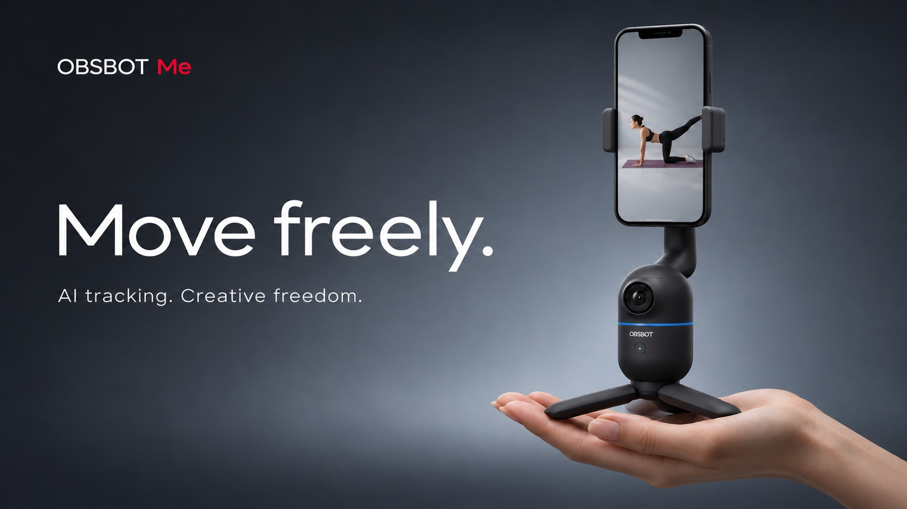
本项目围绕寻影 Me AI 智能跟随手机支架展开美国站电商视觉设计，面向独自拍摄的内容创作者，将人物跟随、便捷操作与便携使用转化为直观的场景叙事。以黑红建立品牌识别，以浅蓝与白色承载功能说明，帮助消费者理解产品如何参与日常创作，并判断是否适合自己的拍摄需求。
独立内容创作者、舞蹈与健身记录者，以及需要手机视频讲解的人群。以上为设计定位假设。
固定机位难以配合横向移动；独自拍摄时，调整构图与操作设备容易打断表达。
先让用户理解跟随价值，再解释操作方法，最后用适配条件和包装清单支持购买判断。
AI 人物跟随：用人物动作与产品关系表达独自拍摄的自由度。
无需专用跟随 App、无需蓝牙配对、手势控制。每张图只传递一个主要信息。
便携设计、手机宽度与重量限制、1/4 英寸接口与包装内容，减少模糊承诺。
叙事采用 JTBD；单图按功能→优势→收益→证据组织。仅支持人物水平跟随，不表达自动俯仰或无限 360° 旋转。
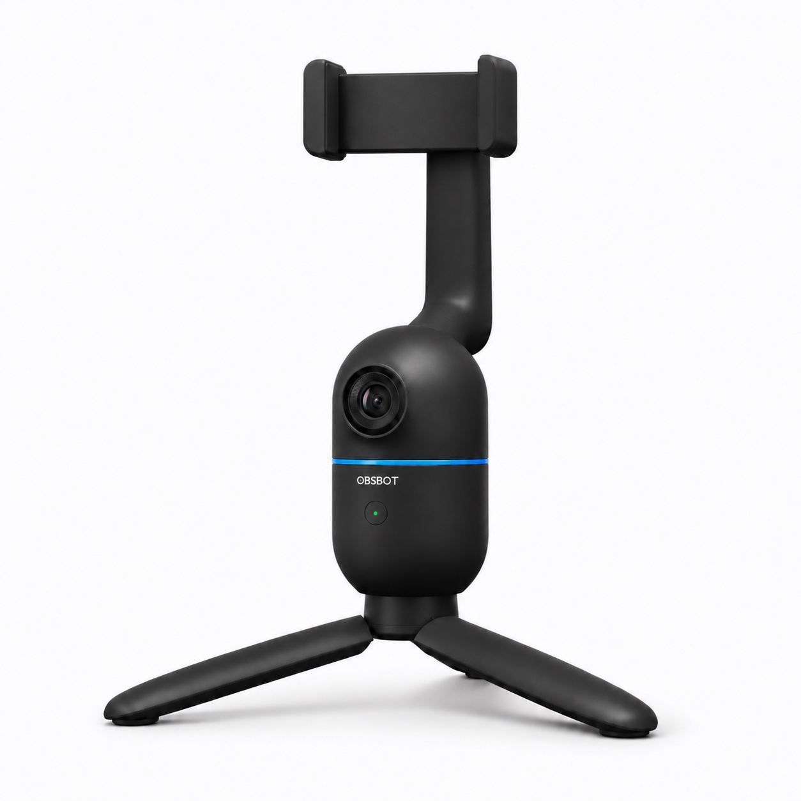
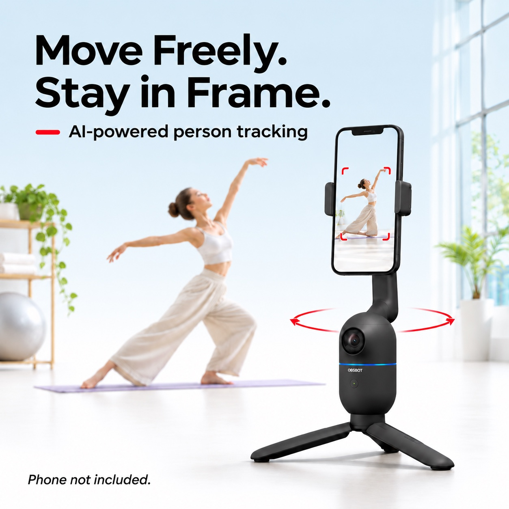
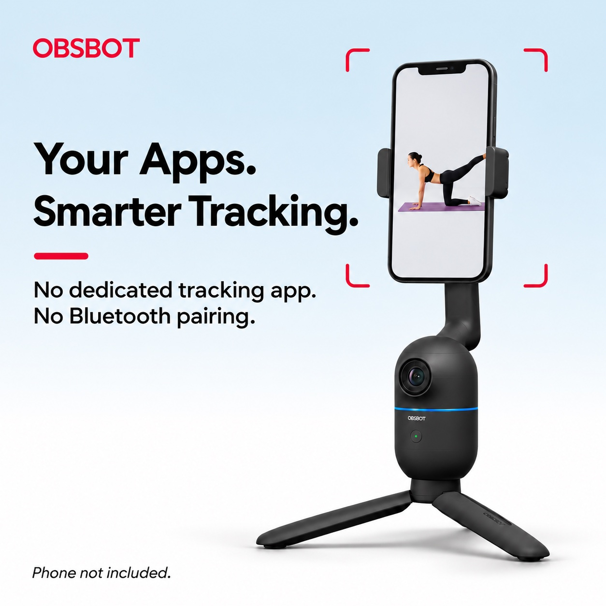
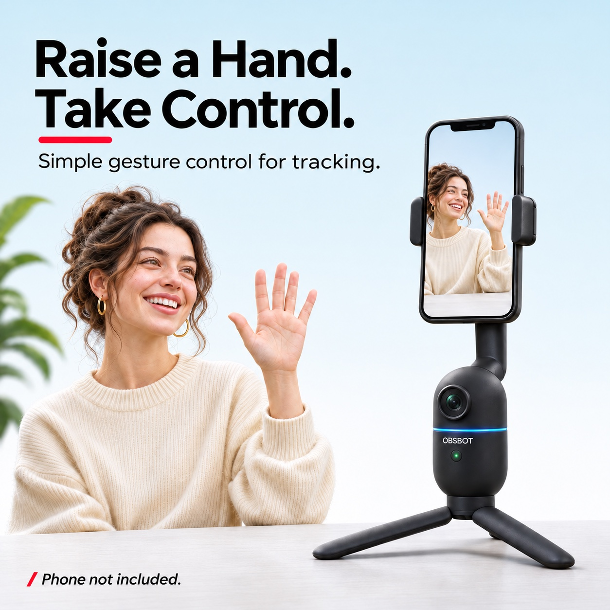
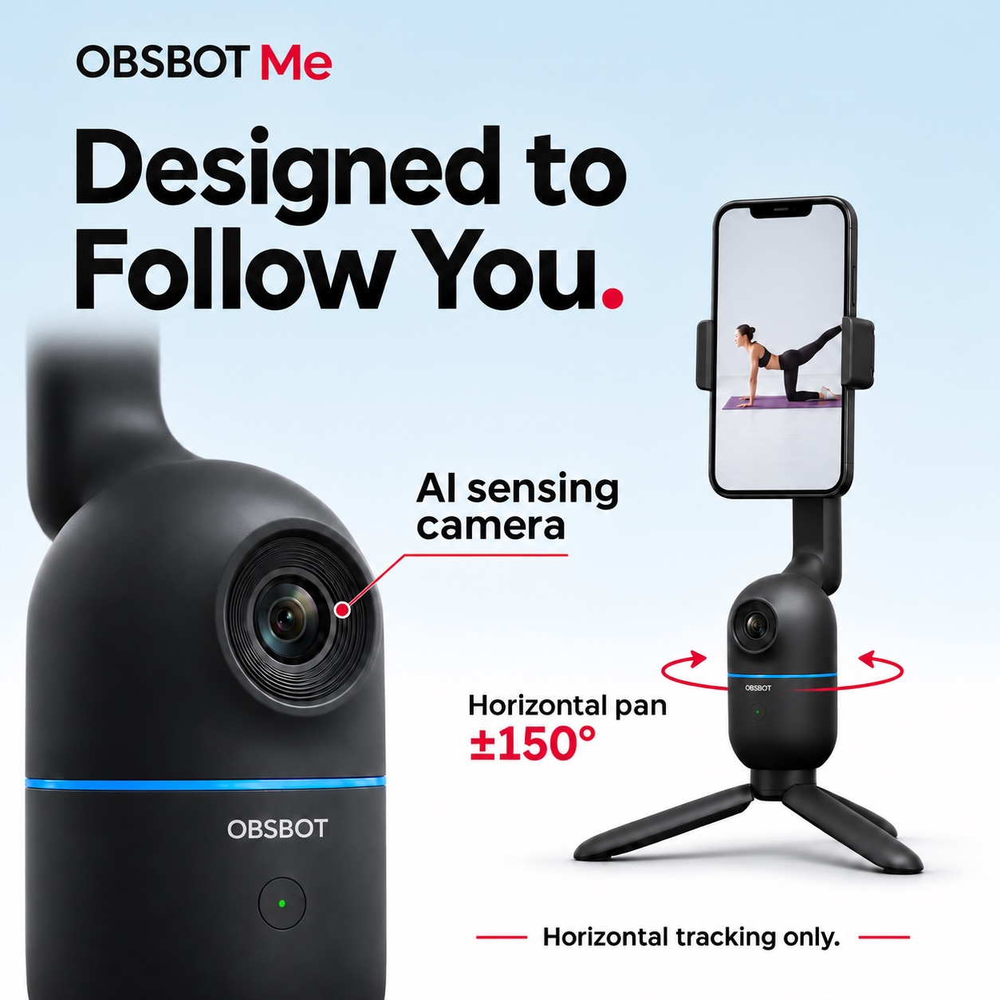
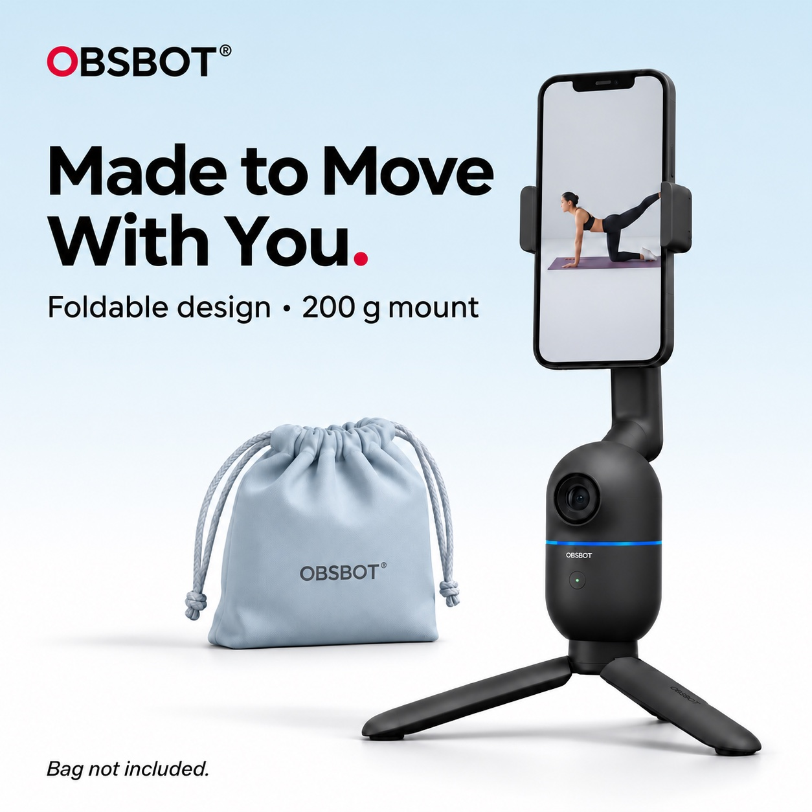
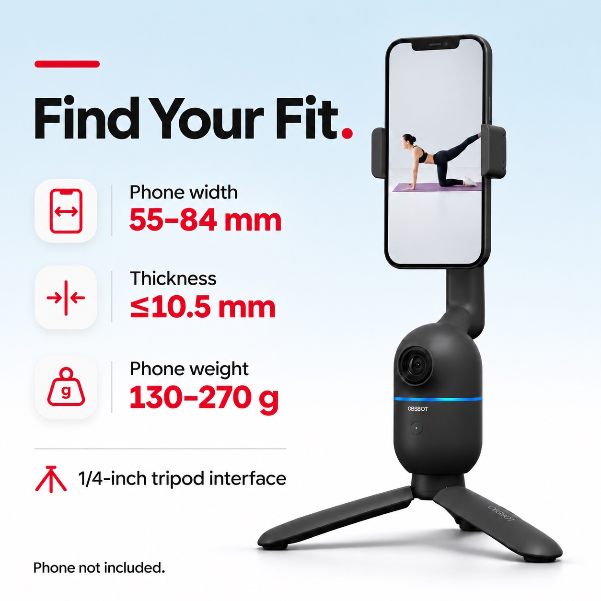
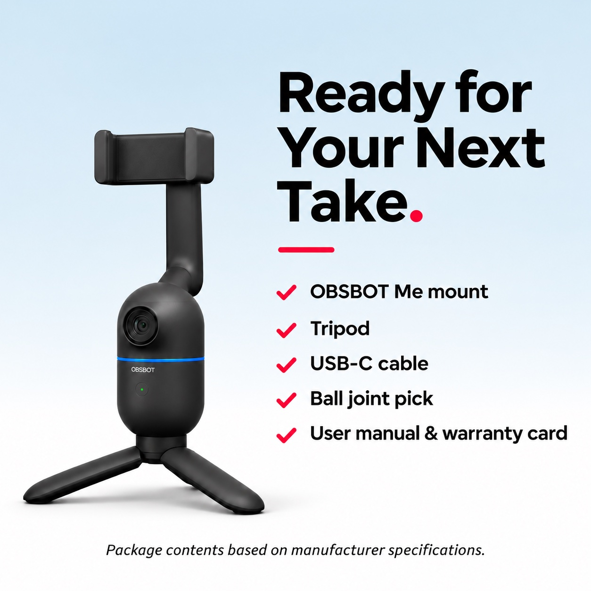
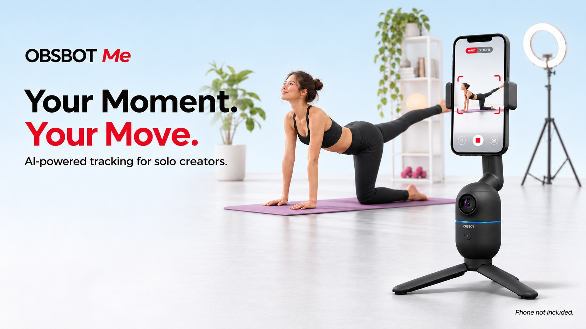
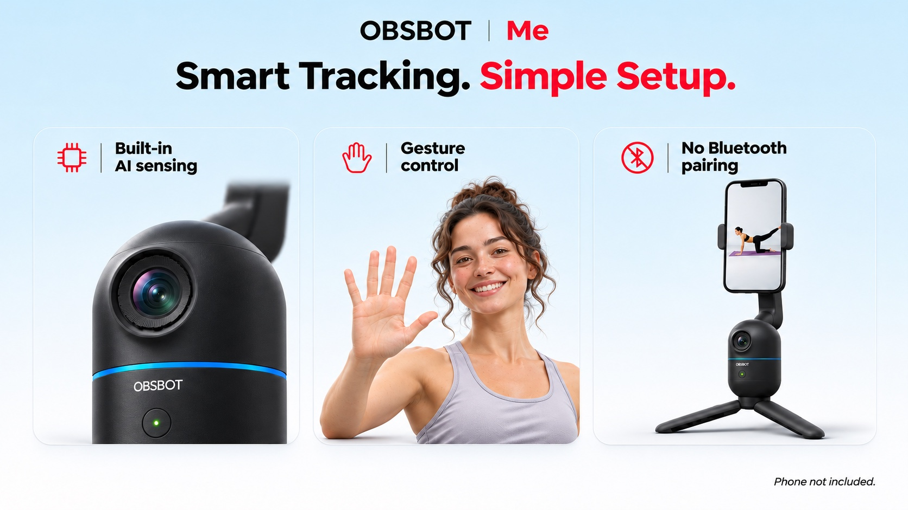
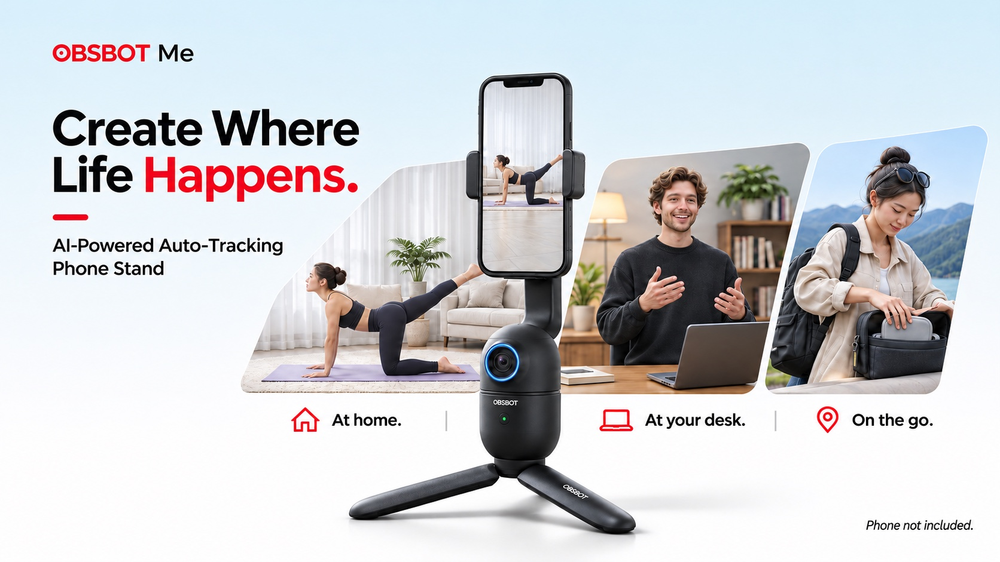
Phone width: 55–84 mm
Thickness: ≤10.5 mm
Phone weight: 130–270 g
Horizontal pan: ±150°
Person tracking only
Recommended distance: 0.5–3 m
Foldable design
1/4-inch tripod interface
Phone and scene props not included